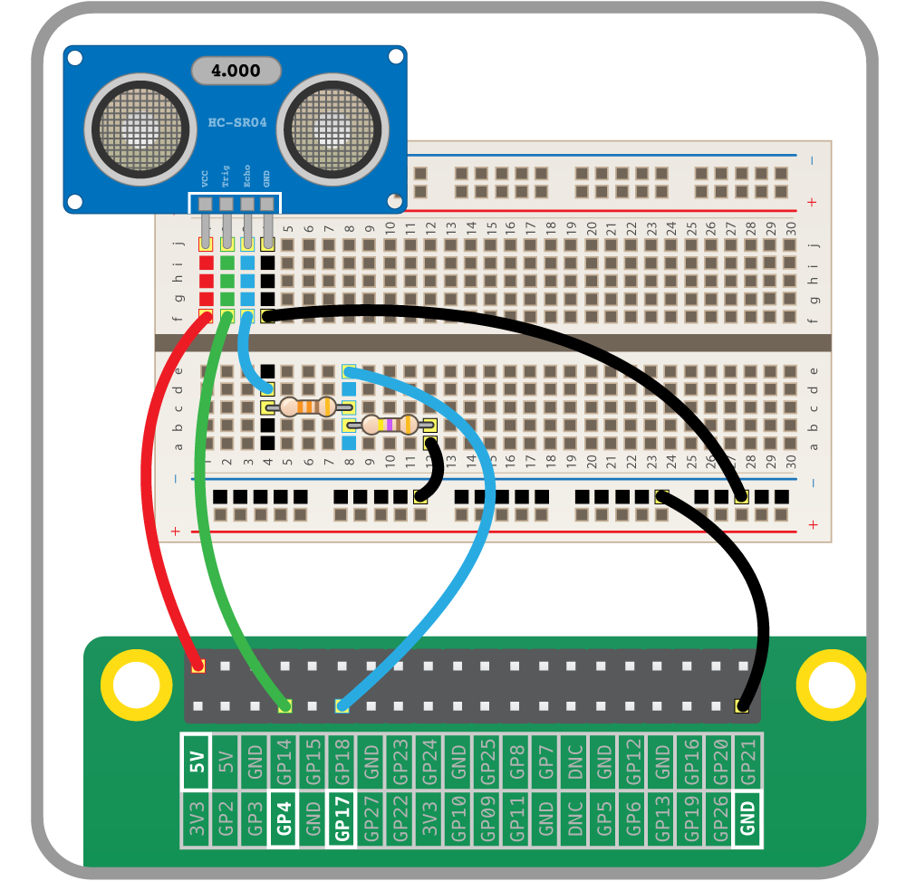
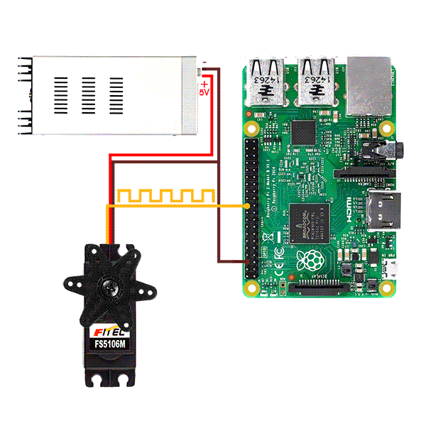
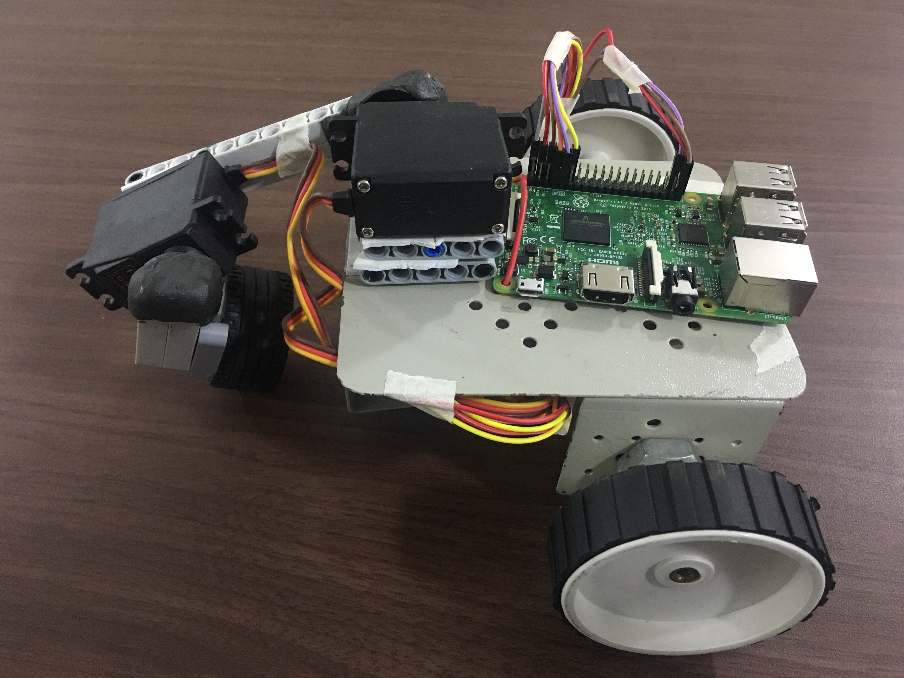

CURL
Crawling Using Reinforcement Learning
A variety of different problems can be solved using Reinforcement Learning, as agents can learn without expert supervision. In this project I created a crawler robot. The robot by using two arms to crawl and pushes its body towards a wall. After reaching the wall it stops and declares that it has reached the wall. In the process of reaching the wall, the robot by itself learns the actions that its arm have to take in order to move towards the wall. This is where reinforcement learning comes into picture. Reinforcement learning enables the robot to move its arms in different positions or states and decide the perfect sequence of actions that maximise the rewards.

Hardware Setup:
It consists of a 125x105 mm chassis, with two 65 mm diameter dummy wheels and a single castor wheel. Length of the hand is 80 mm including the gripper. The gripper here is a Lego rubber wheel used to help the robot push itself towards the wall while the gripper was in contact with the ground. Length of the arm is 100 mm. The arm is connected to the chassis by a 3.17 kg-cm futaba s3003 servo motor. The arm was connected to the hand by another futaba s3003 motor. The robot also has an ultrasonic sensor on its side facing the wall. The motors and the ultrasonic sensor is connected to a Raspberry Pi 3 board. Connections of Raspberry Pi to the ultrasonic sensor and the servos are given in the figures below.
In the following figures the servo is connected to raspberry pi 3 and a 5v power source. You can also power the servo using the raspberry pi 5V and GND pins. The motor has three pins with common colours red, brown and yellow. Connect the yellow to a gpio pin and red to 5V and brown to GND on Raspberry Pi.
 How CURL works?
In this project we used an algorithm known as Q- learning which comes under Reinforcement Learning. Instead of calculating values and policies individually, it finds out q values of each possible action when in a particular state. And performs actions in each state depending on the q values.
As mentioned above Raspberry Pi 3 is used as the controller, servo motors for the arm movements and ultrasonic sensor for distance measurement. Initially, it observes its current positions of the hand, arm and distance from wall. It then calculates the values of each state it could take and consequences it would face. And finally reaches to a conclusion of a best policy or sequence of actions it could take.
In the experiment performed on CURL robot, when it learned to move towards the wall, it figured out when its arm was down and hand moved initially to the left and then to the right it was getting rewards. Even though this wasn't the perfect way to move towards the wall. The perfect sequence of actions to be taken was move arm up, move hand left, move arm down, move hand right. But as the actions it learned to perform gave it results it started performing the same actions repeatedly until it reached the wall.
Summary:
To sum up, CURL robot uses the q-learning algorithm is Reinforcement Learning to learn to crawl and move in a particular direction. After taking series of different actions and it finds out the perfect combination of actions which gets it rewards. Then it tries to maximize these rewards by taking the same action repetitively. This is therefore a small demonstration of how robots can learn using Artificial Intelligence, in this case Reinforcement learning.